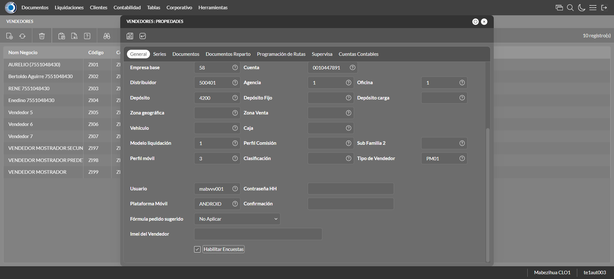

Desarrollado por : Area de Testing PWST
Fecha y hora de inicio : 2022-12-27 09:32:36
Duracion : 0:02:36.173965
Resultado : Total 8，Correctos 5 ，Errores 3 ，Taza de resultado 62.50%
Resumen 62.50% Errores 3 Fallidos 0 Correctos 5 Test realizados 8
| Caso de Prueba | Total | Correctos | Fallido | Error | Detalles | Captura del error |
| Vendedores.Test: Escenario 1 de Vendedores | 8 | 5 | 0 | 3 | Detalles | |
test |
ft1_1: 2022-12-27 09:32:37,605 - root - INFO - Se abre el chrome
2022-12-27 09:32:38,573 - root - INFO - Entra a la URL
2022-12-27 09:32:38,707 - root - INFO - Maximiza la pantalla
Traceback (most recent call last):
File "C:\Users\jsand\AppData\Local\Programs\Python\Python310\lib\site-packages\selenium-4.4.0-py3.10.egg\selenium\webdriver\remote\switch_to.py", line 87, in frame
frame_reference = self._driver.find_element(By.ID, frame_reference)
File "C:\Users\jsand\AppData\Local\Programs\Python\Python310\lib\site-packages\selenium-4.4.0-py3.10.egg\selenium\webdriver\remote\webdriver.py", line 856, in find_element
return self.execute(Command.FIND_ELEMENT, {
File "C:\Users\jsand\AppData\Local\Programs\Python\Python310\lib\site-packages\selenium-4.4.0-py3.10.egg\selenium\webdriver\remote\webdriver.py", line 434, in execute
self.error_handler.check_response(response)
File "C:\Users\jsand\AppData\Local\Programs\Python\Python310\lib\site-packages\selenium-4.4.0-py3.10.egg\selenium\webdriver\remote\errorhandler.py", line 243, in check_response
raise exception_class(message, screen, stacktrace)
selenium.common.exceptions.NoSuchElementException: Message: no such element: Unable to locate element: {"method":"css selector","selector":"[id="mainFrame"]"}
(Session info: chrome=108.0.5359.125)
Stacktrace:
Backtrace:
(No symbol) [0x00A2F243]
(No symbol) [0x009B7FD1]
(No symbol) [0x008AD04D]
(No symbol) [0x008DC0B0]
(No symbol) [0x008DC22B]
(No symbol) [0x0090E612]
(No symbol) [0x008F85D4]
(No symbol) [0x0090C9EB]
(No symbol) [0x008F8386]
(No symbol) [0x008D163C]
(No symbol) [0x008D269D]
GetHandleVerifier [0x00CC9A22+2655074]
GetHandleVerifier [0x00CBCA24+2601828]
GetHandleVerifier [0x00AD8C0A+619850]
GetHandleVerifier [0x00AD7830+614768]
(No symbol) [0x009C05FC]
(No symbol) [0x009C5968]
(No symbol) [0x009C5A55]
(No symbol) [0x009D051B]
BaseThreadInitThunk [0x76796BD9+25]
RtlGetFullPathName_UEx [0x77B58FD2+1218]
RtlGetFullPathName_UEx [0x77B58F9D+1165]
During handling of the above exception, another exception occurred:
Traceback (most recent call last):
File "C:\Users\jsand\AppData\Local\Programs\Python\Python310\lib\site-packages\selenium-4.4.0-py3.10.egg\selenium\webdriver\remote\switch_to.py", line 90, in frame
frame_reference = self._driver.find_element(By.NAME, frame_reference)
File "C:\Users\jsand\AppData\Local\Programs\Python\Python310\lib\site-packages\selenium-4.4.0-py3.10.egg\selenium\webdriver\remote\webdriver.py", line 856, in find_element
return self.execute(Command.FIND_ELEMENT, {
File "C:\Users\jsand\AppData\Local\Programs\Python\Python310\lib\site-packages\selenium-4.4.0-py3.10.egg\selenium\webdriver\remote\webdriver.py", line 434, in execute
self.error_handler.check_response(response)
File "C:\Users\jsand\AppData\Local\Programs\Python\Python310\lib\site-packages\selenium-4.4.0-py3.10.egg\selenium\webdriver\remote\errorhandler.py", line 243, in check_response
raise exception_class(message, screen, stacktrace)
selenium.common.exceptions.NoSuchElementException: Message: no such element: Unable to locate element: {"method":"css selector","selector":"[name="mainFrame"]"}
(Session info: chrome=108.0.5359.125)
Stacktrace:
Backtrace:
(No symbol) [0x00A2F243]
(No symbol) [0x009B7FD1]
(No symbol) [0x008AD04D]
(No symbol) [0x008DC0B0]
(No symbol) [0x008DC22B]
(No symbol) [0x0090E612]
(No symbol) [0x008F85D4]
(No symbol) [0x0090C9EB]
(No symbol) [0x008F8386]
(No symbol) [0x008D163C]
(No symbol) [0x008D269D]
GetHandleVerifier [0x00CC9A22+2655074]
GetHandleVerifier [0x00CBCA24+2601828]
GetHandleVerifier [0x00AD8C0A+619850]
GetHandleVerifier [0x00AD7830+614768]
(No symbol) [0x009C05FC]
(No symbol) [0x009C5968]
(No symbol) [0x009C5A55]
(No symbol) [0x009D051B]
BaseThreadInitThunk [0x76796BD9+25]
RtlGetFullPathName_UEx [0x77B58FD2+1218]
RtlGetFullPathName_UEx [0x77B58F9D+1165]
During handling of the above exception, another exception occurred:
Traceback (most recent call last):
File "C:\xampp\htdocs\versiones\automatizaciones\AutoPWST\01VE\testCase\Vendedores.py", line 36, in test
self.driver.switch_to.frame("mainFrame")
File "C:\Users\jsand\AppData\Local\Programs\Python\Python310\lib\site-packages\selenium-4.4.0-py3.10.egg\selenium\webdriver\remote\switch_to.py", line 92, in frame
raise NoSuchFrameException(frame_reference)
selenium.common.exceptions.NoSuchFrameException: Message: mainFrame
|
|
||||
test_000: Ingresa a la base de datos |
pt1_2: 2022-12-27 09:32:41,804 - root - INFO - Escribe el usuario
2022-12-27 09:32:41,874 - root - INFO - Escribe la contraseña
2022-12-27 09:32:41,940 - root - INFO - Se dio clic en el boton ingresar
2022-12-27 09:32:42,608 - root - INFO - Ejecutar Enterprise
2022-12-27 09:32:46,656 - root - INFO - Cambia entre pestañas
|
|
||||
test_001: Abre menu y ejecuta pantalla |
pt1_3: 2022-12-27 09:32:56,742 - root - INFO - Abre la pantalla de Familias de Impuestos
2022-12-27 09:32:57,292 - root - INFO - La pantalla ejecutada es Familias de Impuestos
2022-12-27 09:32:57,292 - root - INFO - Captura: C:\xampp\htdocs\versiones\automatizaciones\AutoPWST\01VE\report\img screen：20221227_09_32_57.png
2022-12-27 09:32:58,030 - root - INFO - Se da clic en el registro creado, para proceder a modificarlo.
2022-12-27 09:32:58,619 - root - INFO - Se hace el cambio de pestaña para continuar con el registro nuevo
2022-12-27 09:33:04,477 - root - INFO - Se da clic en el registro creado, para proceder a modificarlo.
2022-12-27 09:33:04,549 - root - INFO - Se presiona el boton 'Eliminar', para eliminar el registro.
2022-12-27 09:33:04,663 - root - INFO - Se hace el cambio de pestaña para continuar con el registro nuevo
2022-12-27 09:33:10,493 - root - INFO - Se da clic en el registro creado, para proceder a modificarlo.
2022-12-27 09:33:10,556 - root - INFO - Se presiona el boton 'Eliminar', para eliminar el registro.
2022-12-27 09:33:10,674 - root - INFO - Se hace el cambio de pestaña para continuar con el registro nuevo
2022-12-27 09:33:11,774 - root - INFO - Se da clic en el registro creado, para proceder a modificarlo.
2022-12-27 09:33:11,838 - root - INFO - Se presiona el boton 'Eliminar', para eliminar el registro.
2022-12-27 09:33:11,957 - root - INFO - Se da clic en el boton Guardar; se debe modificar la informacion del registro.
2022-12-27 09:33:12,519 - root - INFO - Se da clic en el registro creado, para proceder a eliminarlo.
2022-12-27 09:33:12,580 - root - INFO - Se presiona el boton 'Eliminar', para eliminar el registro.
2022-12-27 09:33:13,177 - root - INFO - Se confirma el eliminado del registro
2022-12-27 09:33:13,353 - root - INFO - Se presiona el boton 'Refrescar', para crear un nuevo registro igual al anterior.
2022-12-27 09:33:13,475 - root - INFO - Se presiona el boton 'Nuevo', para crear un nuevo registro.
|

|
||||
test_002: Abre la ventana de nuevo y crear un registro |
pt1_4: 2022-12-27 09:33:14,040 - root - INFO - Se abrio la pantalla para el ingreso de un registro nuevo.
2022-12-27 09:33:14,068 - root - INFO - El campo 'Codigo' si se encuentra visible.
2022-12-27 09:33:14,127 - root - INFO - El campo 'Código Alternativo' si se encuentra visible.
2022-12-27 09:33:14,156 - root - INFO - El campo 'Código Usuario' si se encuentra visible.
2022-12-27 09:33:14,184 - root - INFO - El campo 'Nom Negocio' si se encuentra visible.
2022-12-27 09:33:14,212 - root - INFO - El campo 'Documento de Identidad' si se encuentra visible.
2022-12-27 09:33:14,239 - root - INFO - El campo 'Calle' si se encuentra visible.
2022-12-27 09:33:14,267 - root - INFO - El campo 'Nro. Puerta' si se encuentra visible.
2022-12-27 09:33:14,297 - root - INFO - El campo 'Esquinas' si se encuentra visible.
2022-12-27 09:33:14,324 - root - INFO - El campo 'Teléfonos' si se encuentra visible.
2022-12-27 09:33:14,386 - root - INFO - El campo 'Empresa base' si se encuentra visible.
2022-12-27 09:33:14,417 - root - INFO - El campo 'Cuenta base' si se encuentra visible.
2022-12-27 09:33:14,445 - root - INFO - El campo 'Distribuidor base' si se encuentra visible.
2022-12-27 09:33:14,473 - root - INFO - El campo 'Agencia' si se encuentra visible.
2022-12-27 09:33:14,499 - root - INFO - El campo 'Oficina' si se encuentra visible.
2022-12-27 09:33:14,528 - root - INFO - El campo 'Depósito' si se encuentra visible.
2022-12-27 09:33:14,555 - root - INFO - El campo 'Modelo liquidación' si se encuentra visible.
2022-12-27 09:33:14,583 - root - INFO - El campo 'Perfil móvil' si se encuentra visible.
2022-12-27 09:33:14,611 - root - INFO - El campo 'Tipo de Vendedor' si se encuentra visible.
2022-12-27 09:33:14,639 - root - INFO - El campo 'Plataforma Móvil' si se encuentra visible.
2022-12-27 09:33:14,667 - root - INFO - El campo 'Fórmula pedido sugerido' si se encuentra visible.
2022-12-27 09:33:14,695 - root - INFO - El campo 'Habilitar Encuestas' si se encuentra visible.
2022-12-27 09:33:14,745 - root - INFO - Ingresa el codigo del nuevo registro
2022-12-27 09:33:14,843 - root - INFO - Ingresa el codigo alternativo del nuevo registro
2022-12-27 09:33:14,935 - root - INFO - Ingresa el codigo usuario del nuevo registro
2022-12-27 09:33:15,042 - root - INFO - Ingresa el Nom Negocio del nuevo registro
2022-12-27 09:33:15,177 - root - INFO - Ingresa el Documento de Identidad del nuevo registro
2022-12-27 09:33:15,266 - root - INFO - Ingresa la calle del nuevo registro
2022-12-27 09:33:15,326 - root - INFO - Ingresa el nro puerta del nuevo registro
2022-12-27 09:33:15,409 - root - INFO - Ingresa la Esquina 1 del nuevo registro
2022-12-27 09:33:15,493 - root - INFO - Ingresa la Esquina 2 del nuevo registro
2022-12-27 09:33:15,577 - root - INFO - Ingresa el Telefono 1 del nuevo registro
2022-12-27 09:33:15,650 - root - INFO - Ingresa el Telefono 2 del nuevo registro
2022-12-27 09:33:30,170 - root - INFO - Captura: C:\xampp\htdocs\versiones\automatizaciones\AutoPWST\01VE\report\img screen：20221227_09_33_30.png
2022-12-27 09:33:30,374 - root - INFO - Se hace el cambio de pestaña para continuar con el registro nuevo
2022-12-27 09:33:30,975 - root - INFO - Se presiona el boton 'Nuevo', para crear un nuevo registro.
2022-12-27 09:33:31,547 - root - INFO - El campo 'Serie base' si se encuentra visible.
2022-12-27 09:33:31,580 - root - INFO - El campo 'Tipo Impresora' si se encuentra visible.
2022-12-27 09:33:31,635 - root - INFO - El campo 'Puerto Impresora' si se encuentra visible.
2022-12-27 09:33:31,664 - root - INFO - El campo 'Impresora + Lenguaje' si se encuentra visible.
2022-12-27 09:33:31,694 - root - INFO - El campo 'Clave correlativo' si se encuentra visible.
2022-12-27 09:33:31,722 - root - INFO - El campo 'Desde número' si se encuentra visible.
2022-12-27 09:33:31,752 - root - INFO - El campo 'Hasta número' si se encuentra visible.
2022-12-27 09:33:33,883 - root - INFO - Ingresa la Clave Correlativo del nuevo registro
2022-12-27 09:33:33,949 - root - INFO - Ingresa Desde Numero del nuevo registro
2022-12-27 09:33:34,022 - root - INFO - Ingresa Hasta Numero del nuevo registro
2022-12-27 09:33:34,098 - root - INFO - Se presiona el boton 'Guardar', para guardar el registro.
2022-12-27 09:33:34,330 - root - INFO - Se hace el cambio de pestaña para continuar con el registro nuevo
2022-12-27 09:33:34,950 - root - INFO - Se presiona el boton 'Nuevo', para crear un nuevo registro.
2022-12-27 09:33:35,494 - root - INFO - El campo 'Tipo documento' si se encuentra visible.
2022-12-27 09:33:35,524 - root - INFO - El campo 'Modelo de Impresión' si se encuentra visible.
2022-12-27 09:33:37,695 - root - INFO - Se presiona el boton 'Guardar', para guardar el registro.
2022-12-27 09:33:37,888 - root - INFO - Se hace el cambio de pestaña para continuar con el registro nuevo
2022-12-27 09:33:38,460 - root - INFO - Se presiona el boton 'Nuevo', para crear un nuevo registro.
2022-12-27 09:33:39,014 - root - INFO - El campo 'Tipo Documento 2' si se encuentra visible.
2022-12-27 09:33:39,046 - root - INFO - El campo 'Modelo de Impresión' si se encuentra visible.
2022-12-27 09:33:41,212 - root - INFO - Se presiona el boton 'Guardar', para guardar el registro.
2022-12-27 09:33:41,413 - root - INFO - Se da clic en el boton Guardar; se debe crear un nuevo registro.
|
 | ||||
test_003: Repetir el registro creado anteriormente |
pt1_5: 2022-12-27 09:33:41,740 - root - INFO - Se presiona el boton 'Refrescar', para crear un nuevo registro igual al anterior.
2022-12-27 09:33:41,860 - root - INFO - Se presiona el boton 'Nuevo', para crear un nuevo registro igual al anterior.
2022-12-27 09:33:42,459 - root - INFO - Se abrio la pantalla para el ingreso de un registro nuevo.
2022-12-27 09:33:42,520 - root - INFO - El campo 'Codigo' si se encuentra visible.
2022-12-27 09:33:42,551 - root - INFO - El campo 'Código Alternativo' si se encuentra visible.
2022-12-27 09:33:42,582 - root - INFO - El campo 'Código Usuario' si se encuentra visible.
2022-12-27 09:33:42,611 - root - INFO - El campo 'Nom Negocio' si se encuentra visible.
2022-12-27 09:33:42,641 - root - INFO - El campo 'Documento de Identidad' si se encuentra visible.
2022-12-27 09:33:42,683 - root - INFO - El campo 'Calle' si se encuentra visible.
2022-12-27 09:33:42,713 - root - INFO - El campo 'Nro. Puerta' si se encuentra visible.
2022-12-27 09:33:42,744 - root - INFO - El campo 'Esquinas' si se encuentra visible.
2022-12-27 09:33:42,775 - root - INFO - El campo 'Teléfonos' si se encuentra visible.
2022-12-27 09:33:42,803 - root - INFO - El campo 'Empresa base' si se encuentra visible.
2022-12-27 09:33:42,832 - root - INFO - El campo 'Cuenta base' si se encuentra visible.
2022-12-27 09:33:42,860 - root - INFO - El campo 'Distribuidor base' si se encuentra visible.
2022-12-27 09:33:42,887 - root - INFO - El campo 'Agencia' si se encuentra visible.
2022-12-27 09:33:42,914 - root - INFO - El campo 'Oficina' si se encuentra visible.
2022-12-27 09:33:42,944 - root - INFO - El campo 'Depósito' si se encuentra visible.
2022-12-27 09:33:42,972 - root - INFO - El campo 'Modelo liquidación' si se encuentra visible.
2022-12-27 09:33:42,999 - root - INFO - El campo 'Perfil móvil' si se encuentra visible.
2022-12-27 09:33:43,027 - root - INFO - El campo 'Tipo de Vendedor' si se encuentra visible.
2022-12-27 09:33:43,053 - root - INFO - El campo 'Plataforma Móvil' si se encuentra visible.
2022-12-27 09:33:43,082 - root - INFO - El campo 'Fórmula pedido sugerido' si se encuentra visible.
2022-12-27 09:33:43,109 - root - INFO - El campo 'Habilitar Encuestas' si se encuentra visible.
2022-12-27 09:33:43,159 - root - INFO - Ingresa el codigo del nuevo registro
2022-12-27 09:33:43,254 - root - INFO - Ingresa el codigo alternativo del nuevo registro
2022-12-27 09:33:43,334 - root - INFO - Ingresa el codigo usuario del nuevo registro
2022-12-27 09:33:43,459 - root - INFO - Ingresa el Nom Negocio del nuevo registro
2022-12-27 09:33:43,558 - root - INFO - Ingresa el Documento de Identidad del nuevo registro
2022-12-27 09:33:43,660 - root - INFO - Ingresa la calle del nuevo registro
2022-12-27 09:33:43,730 - root - INFO - Ingresa el nro puerta del nuevo registro
2022-12-27 09:33:43,818 - root - INFO - Ingresa la Esquina 1 del nuevo registro
2022-12-27 09:33:43,899 - root - INFO - Ingresa la Esquina 2 del nuevo registro
2022-12-27 09:33:43,972 - root - INFO - Ingresa el Telefono 1 del nuevo registro
2022-12-27 09:33:44,045 - root - INFO - Ingresa el Telefono 2 del nuevo registro
2022-12-27 09:33:57,826 - root - INFO - Se da clic en el boton Guardar; se debe crear un nuevo registro.
2022-12-27 09:33:58,842 - root - INFO - Captura: C:\xampp\htdocs\versiones\automatizaciones\AutoPWST\01VE\report\img screen：20221227_09_33_58.png
2022-12-27 09:33:59,996 - root - INFO - Captura: C:\xampp\htdocs\versiones\automatizaciones\AutoPWST\01VE\report\img screen：20221227_09_33_59.png
2022-12-27 09:34:04,882 - root - INFO - Se presiona el boton 'Cerrar', para cerrar el mensaje de duplicidad de llave primaria
2022-12-27 09:34:04,993 - root - INFO - Se presiona el boton 'Cerrar', para cerrar la ventana
|
|||||
test_004: Modificar el registro |
ft1_6: 2022-12-27 09:34:05,128 - root - INFO - Se presiona el boton 'Refrescar', para crear un nuevo registro igual al anterior.
2022-12-27 09:34:05,440 - root - ERROR - No se encontró el registro deseado, validar que la acción anterior haya finalizado,que el xpath sea el correcto o que la página no presente lentitud
2022-12-27 09:34:05,443 - root - INFO - Captura: C:\xampp\htdocs\versiones\automatizaciones\AutoPWST\01VE\report\img screen：20221227_09_34_05.png
2022-12-27 09:35:05,688 - root - ERROR - No se encontró el botón Cerrar, revise si el xpath sigue siendo el mismo, para mas detalles del error consulte el reporte
2022-12-27 09:35:07,695 - root - INFO - Captura: C:\xampp\htdocs\versiones\automatizaciones\AutoPWST\01VE\report\img screen：20221227_09_35_07.png
Traceback (most recent call last):
File "C:\xampp\htdocs\versiones\automatizaciones\AutoPWST\01VE\testCase\Vendedores.py", line 102, in test_004
Cierra_modal = self.wait.until(conditions.visibility((By.XPATH, Configuracion.btn_cerrar_modal)))
File "C:\Users\jsand\AppData\Local\Programs\Python\Python310\lib\site-packages\selenium-4.4.0-py3.10.egg\selenium\webdriver\support\wait.py", line 90, in until
raise TimeoutException(message, screen, stacktrace)
selenium.common.exceptions.TimeoutException: Message:
Stacktrace:
Backtrace:
(No symbol) [0x00A2F243]
(No symbol) [0x009B7FD1]
(No symbol) [0x008AD04D]
(No symbol) [0x008DC0B0]
(No symbol) [0x008DC22B]
(No symbol) [0x0090E612]
(No symbol) [0x008F85D4]
(No symbol) [0x0090C9EB]
(No symbol) [0x008F8386]
(No symbol) [0x008D163C]
(No symbol) [0x008D269D]
GetHandleVerifier [0x00CC9A22+2655074]
GetHandleVerifier [0x00CBCA24+2601828]
GetHandleVerifier [0x00AD8C0A+619850]
GetHandleVerifier [0x00AD7830+614768]
(No symbol) [0x009C05FC]
(No symbol) [0x009C5968]
(No symbol) [0x009C5A55]
(No symbol) [0x009D051B]
BaseThreadInitThunk [0x76796BD9+25]
RtlGetFullPathName_UEx [0x77B58FD2+1218]
RtlGetFullPathName_UEx [0x77B58F9D+1165]
During handling of the above exception, another exception occurred:
Traceback (most recent call last):
File "C:\xampp\htdocs\versiones\automatizaciones\AutoPWST\01VE\testCase\Vendedores.py", line 113, in test_004
raise Exception()
Exception
|
|||||
test_005: Eliminar el registro creado |
ft1_7: 2022-12-27 09:35:07,884 - root - INFO - Se presiona el boton 'Refrescar', para proceder a eliminar el registro.
2022-12-27 09:35:08,181 - root - ERROR - No se encontró el registro deseado, validar que la acción anterior haya finalizado,que el xpath sea el correcto o que la página no presente lentitud
2022-12-27 09:35:08,181 - root - INFO - Captura: C:\xampp\htdocs\versiones\automatizaciones\AutoPWST\01VE\report\img screen：20221227_09_35_08.png
2022-12-27 09:35:12,593 - root - INFO - Se cierra chrome
Traceback (most recent call last):
File "C:\xampp\htdocs\versiones\automatizaciones\AutoPWST\01VE\testCase\Vendedores.py", line 131, in test_005
raise Exception()
Exception
|
|||||
test_006: Cerrar_Navegador |
Correcto |
|
||||
| Caso de prueba | 8 | 5 | 0 | 3 | Taza de resultado：62.50% | |